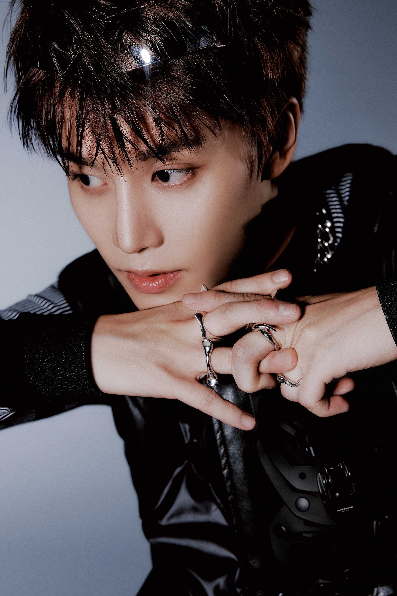

Taeyong 🌹
95's line. Líder del grupo. Rapero. Debutó como solista con Love Theory.

Taeil 🌙
94's line. Es el mayor del grupo. Vocalista. Toca el piano y la guitarra.
Johnny 🐱
95's line. Rapero. Nació en Chicago, USA. Es modelo y DJ.
Yuta 🐙
95's line. Vocalista y actor. Nació en Osaka, Japón. Le gusta jugar futbol y leer comics.

Mark 🐯
99's line. Rapero. Nació en Vancouver, Canadá. Forma parte de la subunidad NCT Dream.
Jungwoo 🐶
98's line. Vocalista y MC. Forma parte de la subunidad Dojaejung.
Haechan 🐻
00's line. Vocalista. Fan de Michael Jackson. Forma parte de la subunidad NCT Dream.
Doyoung 🐰
96's line. Vocalista, actor y MC. Forma parte de la subunidad Dojaejung.
Jaehyun 🍑
97's line. Vocalista, rapero y actor. Forma parte de la subunidad Dojaejung.